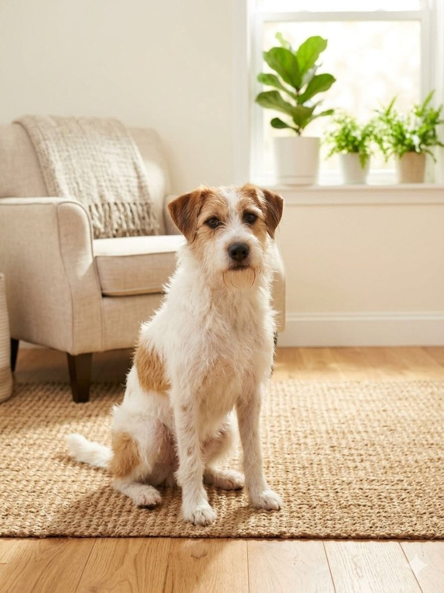
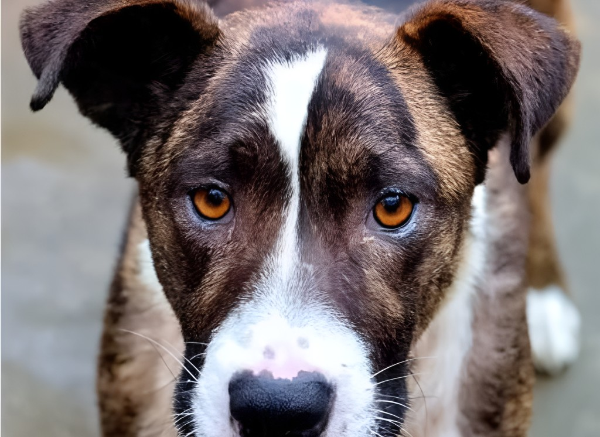
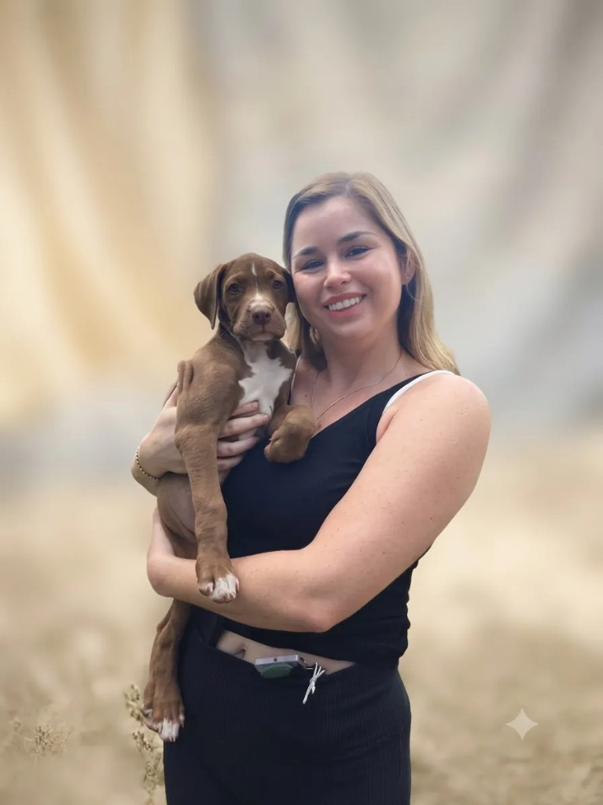
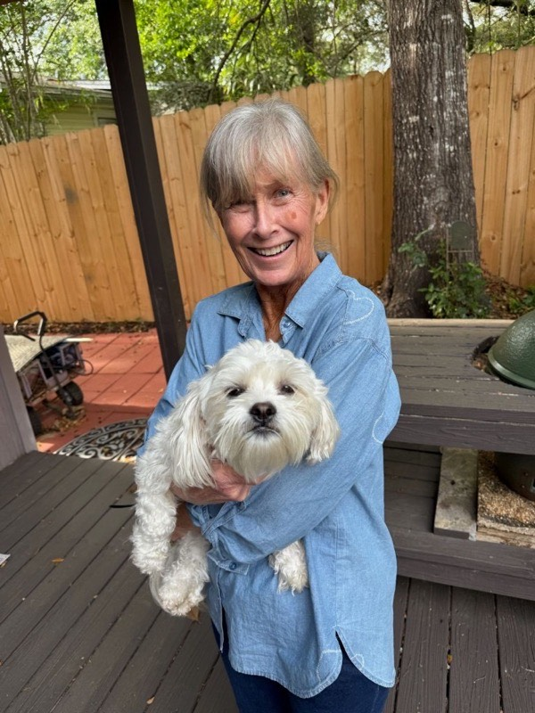
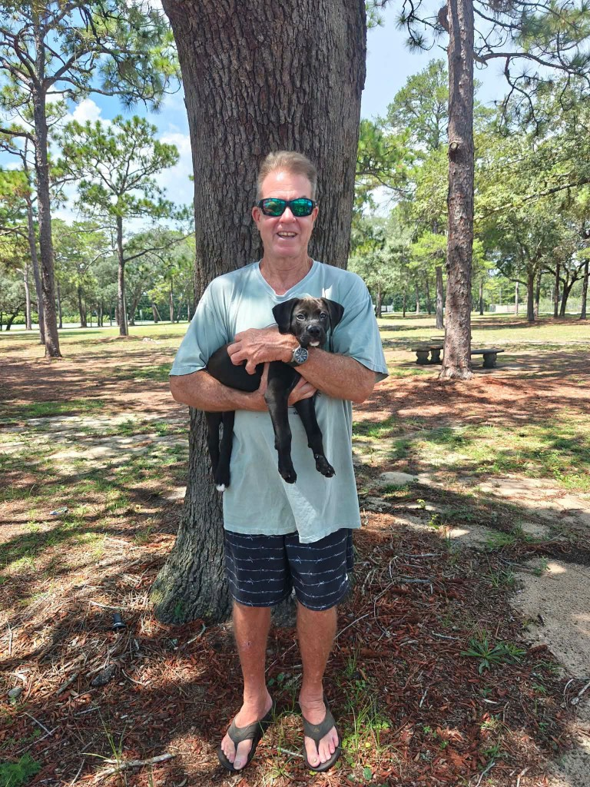
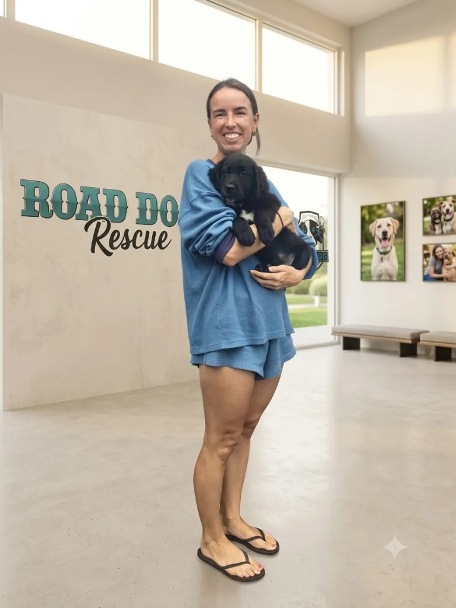

Adopt
Open your heart and home to a vetted, ready-to-love rescue dog.
Road Dogg Rescue saves dogs from euthanasia at kill shelters and gives them the love, care, and vetting they need to thrive — all through our network of dedicated foster homes and volunteers.


We're a 501(c) nonprofit dedicated to saving dogs from being euthanized in overcrowded kill shelters. As a 100% foster-based rescue, every dog in our care lives in a real home — never a kennel — supported by our loving network of volunteers.
This list updates automatically from our adoption database. See a face you love? Start an application and we'll be in touch!
Adoption days, fundraisers, and community meetups — see what's coming up and RSVP on our Facebook events page.
See events on FacebookEvery adoption, foster, and donation directly saves a life.
Open your heart and home to a vetted, ready-to-love rescue dog.
Give a dog a safe place to land while they wait for their forever family.
Fund vetting, transport, and care for dogs in need. Every dollar helps.
A few of the wonderful pups who found their families through Road Dogg Rescue.

It was love at first sight for these two.

From shelter to spoiled — adopted and adored.

Found her perfect match and never looked back.

Living his best life in his forever home.
Whether you adopt, foster, volunteer, or donate, you become part of the reason a dog gets a second chance. Join the Road Dogg Rescue family today.